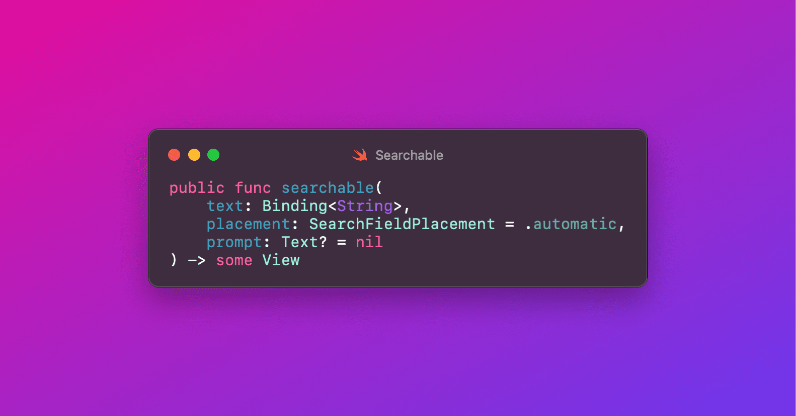
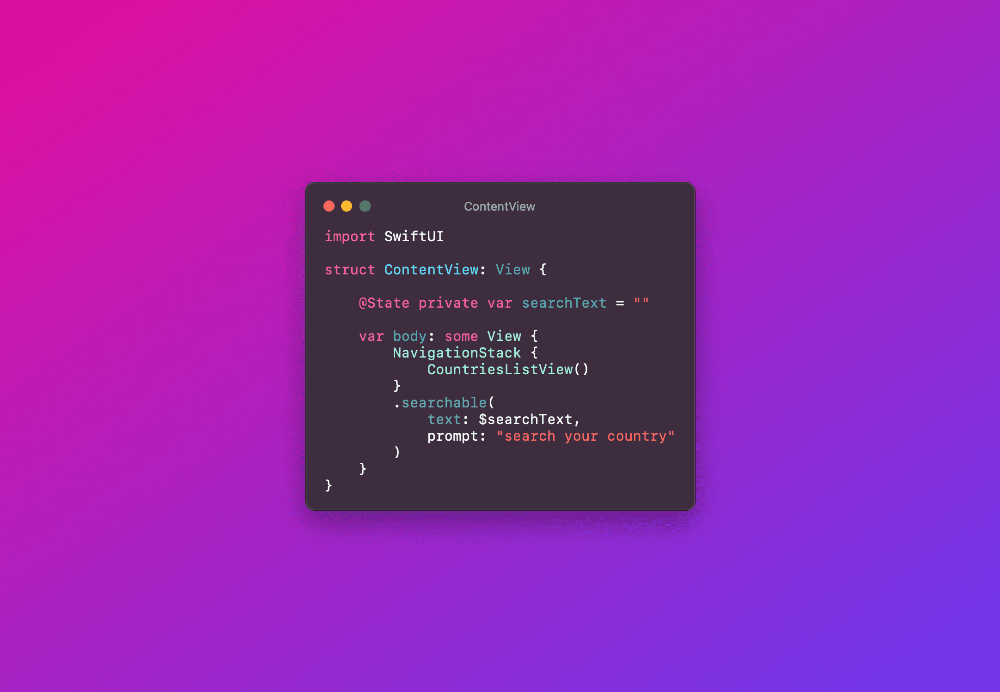
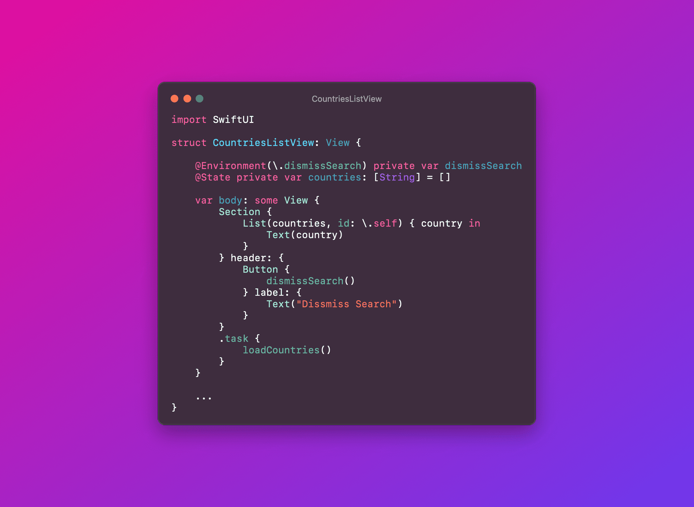

Dismiss search programmatically in SwiftUI
In SwiftUI, integrating a search bar into the navigation bar is straightforward and user-friendly, thanks to the '.searchable()' modifier. This modifier can be effortlessly added to any view. Not only does it enhance the user interface by providing quick and easy access to search functionality, but it also offers various customization options. For instance, you can define parameters for filtering and displaying search results, and even customize the appearance of the search bar.

Here's an example of how to implement it:

The example showcases a ContentView where the .searchable() modifier is applied directly to the NavigationStack. The variable 'searchText' is a state variable that holds the current search query. The '.searchable()' modifier binds this variable to the search bar, enabling dynamic search functionality. When a user types into the search bar, searchText is updated in real time.
The CountriesListView presents a list of countries, likely fetched from a data source or API.
But in this article, we're not going to talk about the searchable mechanism in SwiftUI. Instead, I'll be focusing on a case I encountered when developing a feature in my project. To cancel the search, it's intuitive to click on the cancel button that appears on the search bar when you start typing. Imagine you have a scenario where you need to cancel the search and hide the keyboard without manually tapping the cancel button, but rather in an automatic way. Well, in SwiftUI, this can be achieved by using the '@Environment(.dismissSearch)' variable. By calling 'dismissSearch()' environment operator, we can cancel the search.

This function provides an intuitive way for users to cancel their search operation. By simply invoking 'dismissSearch()', the search is cancelled, and the keyboard is automatically dismissed. This not only streamlines the user experience but also caters to scenarios where an automatic dismissal of the search might be more contextually appropriate. This approach particularly shines in cases where the search functionality is part of a larger workflow. For instance, in our CountriesListView, a user might be browsing through a list of countries for selection. Once the selection is made, it would be logical and more user-friendly to automatically dismiss the search, reducing the number of steps for the user.
Conclusion
In summary, SwiftUI's .dismissSearch offers a simple yet effective way to enhance user interactions within an app. It's a clear example of how SwiftUI empowers developers to create applications that are not only visually appealing but also intuitively interactive. This feature, though small, is a significant step towards making iOS apps more user-centric and efficient.